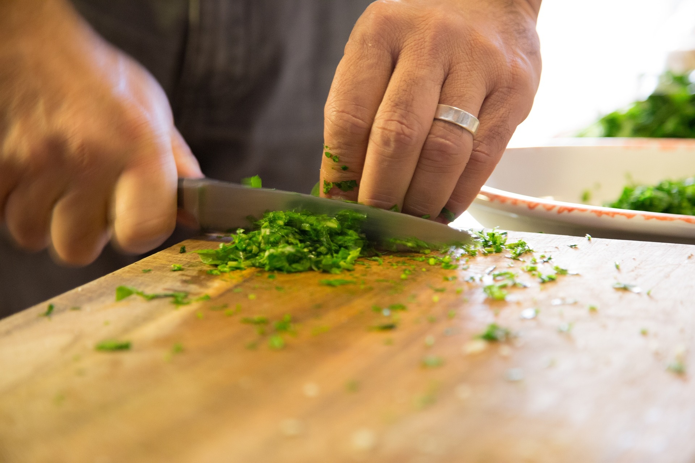

Fun and friendly cookery lessons for all levels

Want to improve your cooking skills without going to a fancy chef school?
Leaving home and need to learn basic cooking on a budget?
Wish you could be the next star of Bakeoff - or at least impress your friends?
Whatever your needs and current level, Cooking With Dave is a fun, relaxed and great value way to develop this vital life skill. Learn with a qualified chef and baker from the comfort of your own home - and you get to eat everything we cook afterwards! Choose from my pre-designed workshops or contact me to discuss a personalised lesson.
Real life skills you can actually use
Have you been put off cooking by TV chefs and their complicated recipes involving expensive ingredients you'll never use again? I can show you how to expand your cooking repertoire so you can rustle up simple, cheap and tasty meals which are much better for you than processed foods. Whether you are looking to feed a family on a budget, learn some quick and easy recipes so you can cut down on junk food, or even show off at dinner parties, I can design a lesson to suit you. What's more, we'll only use the equipment you have in your own kitchen so you'll definitely be able to keep cooking by yourself.